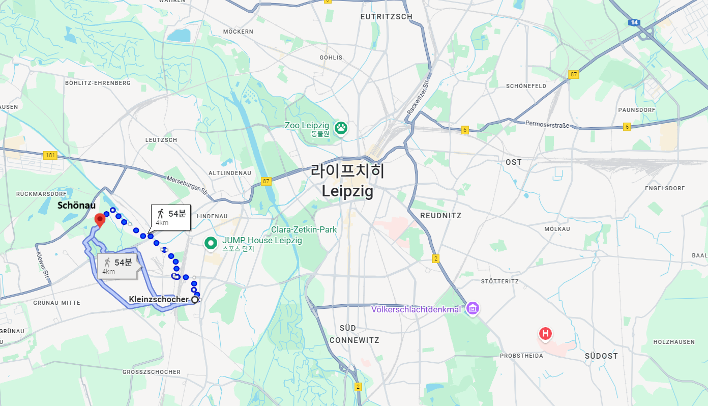
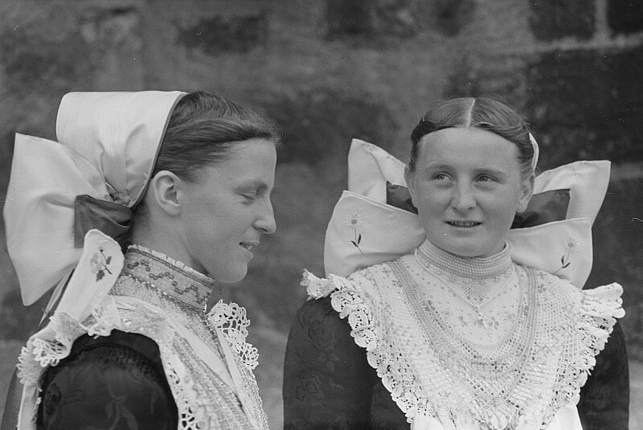
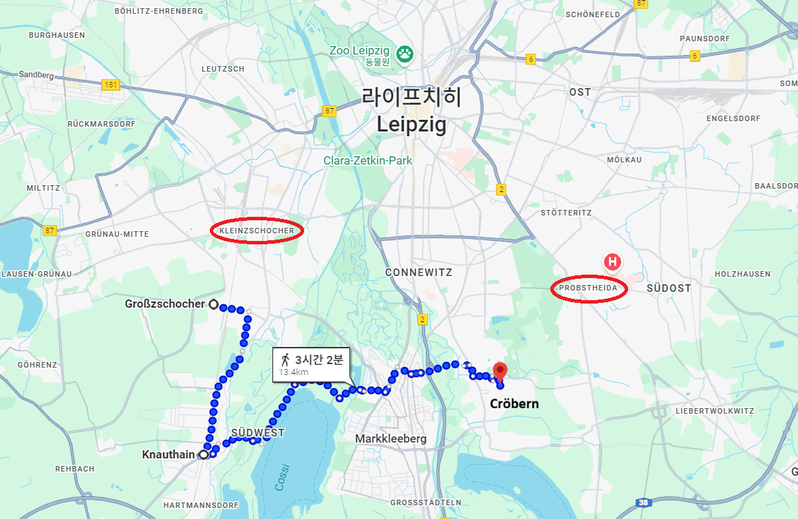
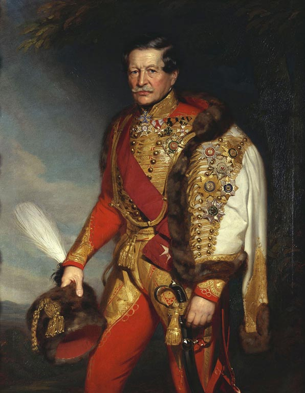

라이프치히 전투 (27) - 총사령관의 내통?
게시: 2025-12-08T06:30:16+09:00
서쪽 린더나우 방면으로 공격해들어가야 했던 귤라이의 오스트리아 제3군단 병력은 다른 방면의 공격진들처럼 아침 일찍부터 공격을 시작하지는 않았습니다. 주된 핑계는 아직 병력이 다 집결하지 않았고, 간신히 도착한 부대들도 강행군으로 인해 지쳐 있었다는 것이었습니다. 실제로 일부 사단은 바이센펠스에서 아직 도착하지 않은 상태였습니다. 하지만 가장 큰 이유는 귤라이의 자포자기였습니다. 이틀 전의 제1일차 전투 때에도 린더나우는 그 주변을 둘러싼 습지 등으로 인해 사실상 난공불락이었는데, 지금도 뾰족한 수가 없다는 것이 귤라이의 현명한 판단이었습니다. 실제로 린더나우 서쪽에는 병력들이 숙영할 넓은 마른 땅도 없었으므로, 귤라이의 사령부는 물론 주력 보병사단들은 모두 린더나우 남서쪽의 그로스초허(Grosszschocher, 큰 초허)와 클라인초허(Kleinzschocher, 작은 초허) 마을 일대에서 지난 밤의 폭우 속에서 야영했고, 린더나우 앞에는 소수의 경계 병력만 배치해 놓았습니다. 저 멀리 다른 방면에서는 이미 시작된 포격 소리를 들으며, 오늘 공격을 언제 어떻게 시작해야 하나 골머리를 앓고 있던 귤라이는 오래 고민할 필요가 없었습니다. 린더나우에서 적군이 쏟아져 나온다는 급보가 날아들었기 때문입니다. 베르트랑이 출격한 것입니다. 귤라이는 차라리 더 잘 되었다는 생각이었습니다. 답이 안 나오는 린더나우 공격에 비해 차라리 적의 공격을 막아내는 편이 지형적으로 더 유리했기 때문이었습니다. 그는 황급히 일부 병력이라도 린더나우 서쪽 1km 정도 떨어진 클라인초허와 쇤나우(Schönau) 사이의 나지막한 능선으로 전개했습니다.

(클라인초허와 쇤나우 사이의 거리는 약 4km입니다. 클라인초허 밑에 그로스초허가 보입니다. Zschocher라는 이름은 그 일대의 슬라브계 원주민인 조르벤(Sorben)인들의 어휘에서 온 것으로서, 불로 태워 만든 개간지 정도의 뜻이라고 합니다. 작센 등 남동부 독일에 zsch라는 철자가 들어가는 이름들이 많은데, 그게 다 조르벤어에서 나온 것이라고 하네요.)

(작센과 폴란드, 체코 사이에 걸친 지역을 루사티아(Lusatia, 독일어로는 라우지츠(Lausitz))라고 하고, 그 일대에 사는 서부 슬라브계 민족을 조르벤(Sorben)인이라고 합니다. 이들은 원래 독자적인 언어와 정체성을 가진 민족이었으나, 17세기 이후 독일계에 동화되기 시작하여 20세기 초에는 사실상 민족의 정체성이 사라지고 모두 독일어를 쓰게 되었다고 합니다. 사진은 1950년에 작센 바우첸(Bautzen)에서 촬영된 전통 복장 차림의 조르벤 여성들입니다.) 그러나 아무 준비가 없다가 허둥지둥 꾸민 방어선이 제대로 지켜질 리가 없었습니다. 기세 좋게 쏟아져 나온 베르트랑의 부대들은 오스트리아군이 지키는 능선을 회피하여 별다른 방비가 없는 그 양 옆을 뚫고 진격했습니다. 일부 부대는 서쪽의 메르제부르크(Merseburg)로, 일부는 남서쪽의 마크란슈테트(Markranstädt)로 향했는데, 일부는 오스트리아 제3군단 주력이 숙영하던 클라인초허를 공격했습니다. 밤 사이 내린 비가 그친지 얼마 안 되어 아직 안개가 자욱한 가운데 이루어진 베르트랑의 신속한 공격은 완전히 오스트리아군의 의표를 찔렀습니다. 오스트리아군은 엄청난 대군이 쳐들어 온 줄 알았고, 많은 부대들이 황급히 후퇴했습니다. 일부 부대는 급한 김에 동쪽 방향으로 후퇴하다 엘스터강을 건너지 못하고 길이 막혀 400여 명이 그랑다르메의 포로가 되기도 했습니다. 연합군이 점령해놓고 있던 임시 다리가 빗물에 불어난 엘스터강의 급류에 휘말려 끊어졌던 것입니다. 이렇게 비교적 쉽게 클라인초허 마을을 빼앗은 베르트랑은 일부 부대에게는 마크란슈테트 방향으로의 행진을 계속 하도록 지시하고 나머지 부대로는 그로스초허까지 오스트리아군을 밀어붙였습니다. 비록 초전에는 기습을 당하고 당황하여 밀리기는 했지만, 절대적인 병력수는 오스트리아군이 더 많았습니다. 귤라이는 전열을 정비하여 그랑다르메의 공격을 저지하는데 성공했고, 이어서 다시 클라인초허로 밀고 올라갈 준비를 하고 있었습니다. 그런데, 그때 플라이서강 동쪽에서 슈바르첸베르크의 급보가 도착했습니다. 그 내용은 당장 오스트리아 제3군단 전체를 플라이서강 너머 남동쪽의 크뢰베른(Cröbern)으로 이동시키라는 것이었습니다.

(그로스초허에서 크뢰베른으로 가는 직선으로는 약 7km로서, 도로 상태가 좋더라도 2시간 가까이 걸리는 거리입니다. 그러나 골치 아픈 부분은 엘스터강과 플라이서강을 모두 건너야 하는데, 그 직선 거리 인근의 다리들은 모두 그랑다르메가 점거하고 있다는 것이었습니다. 결국 이 두 강을 건너기 위해서는 연합군이 다리를 확보해놓고 있던 상류쪽으로 돌아가야만 했고, 그래서 귤라이도 크뢰베른이 있는 동쪽이 아닌 남쪽의 크나우트하인(Knauthain)을 향해 행군을 시작했습니다. 저 지도는 1813년 당시와는 많이 달라진 현대의 지형을 보여주는 것이고, 당시에는 크나우트하인 동쪽의 코시(Cossi)라는 저수지는 존재하지 않았습니다.) 이렇게 중요한 순간에 난데없이 플라이서강 동쪽으로 이동하라는 명령을 받은 귤라이는 어리둥절했지만, 이런 큰 전투에서는 총사령관의 명령을 따르는 것이 중요했습니다. 저 멀리 동쪽 전선에서 뭔가 긴박한 상황이 벌어졌을 수도 있었으니까요. 귤라이는 명령서 그대로, 오스트리아 제3군단 전체를 남동쪽으로 후퇴시켰습니다. 다만 베르트랑 군단을 그대로 내버려둘 수는 없었으므로, 원래 제3군단 소속이 아니었던 지원병력들, 즉 리히텐슈타인의 제1경보병사단과 틸만(Thielmann)과 멘스도르프(Emmanuel von Mensdorff-Pouilly)가 지휘하는 자유여단(Streifkorps, 이름과는 달리 군단이나 여단 규모는 아니고, 유격병 역할을 하던 의용병 부대)은 그로스초허에 남겨서 베르트랑의 병력의 진격 방향을 감시하도록 했습니다.

(멘스도르프입니다. 이건 그가 노년에 오스트리아군 기병대 총사령관이 된 모습이고, 1813년 당시 그는 아직 36세의 대령이었습니다. 멘스도르프의 이름은 원래 멘스도르프-푸이(Mensdorff-Pouilly)로서 가문 이름만 보면 마치 오스트리아의 멘스도르프 가문과 프랑스의 푸이 가문이 결혼해서 만들어진 명문가의 이름처럼 보입니다. 그러나 실제로는 원래 그는 Emmanuel de Pouilly로서 정말 프랑스의 푸이 지방의 남작 가문에서 태어났습니다. 그가 멘스도르프-푸이가 된 것은 그의 아버지가 온 가족을 데리고 프랑스 대혁명을 피해 오스트리아로 망명을 떠났기 때문입니다. 그의 가문은 여기서 이름을 멘스도르프-푸이로 바꿨습니다. 그는 망명한 지 3년만인 1793년, 16세의 나이로 오스트리아군에 입대하여 여기저기 전투에 참여했습니다. 두 살 위인 형도 오스트리아군으로서 싸우다 이탈리아 전선에서 전사하기도 했고, 본인도 1799년 프라우언펠트(Frauenfeld) 전투에서 오른손에 심한 부상을 입어, 이후 그는 오른손이 사실상 불구가 되었습니다. 그는 나폴레옹 몰락 이후에도 오스트리아에 남아 정착하여 백작 작위를 받았으며, 그의 아들은 19세기 후반에 오스트리아 총리가 되기도 했습니다.) 그러나 귤라이에게 어리둥절한 일은 여기서 그치지 않았습니다. 약 15km 떨어진 크뢰베른까지 가는 길의 절반은 커녕 엘스터강도 건너기 전의 장소인 크나우트하인(Knauthain)까지 왔을 때, 또 다시 슈바르첸베르크에게서 파발마가 달려와 명령서를 전달했습니다. 그 내용은 일단 현지점에서 대기하라는 것이었습니다. 그러니까 대충 1시간 사이에 '당장 와라' '아니, 일단 거기 멈춰 기다려'라는 명령이 연달아 날아온 셈이었습니다. 물이 불어난 플라이서강을 어떻게 건널까 걱정하던 귤라이는 한편으로는 안도감을 느끼면서도 다른 한편으로는 무슨 놈의 작전이 이 모양인가 불안감을 느꼈습니다. 아니나 다를까, 이렇게 린더나우 앞을 가로 막고 있던 오스트리아 제3군단이 스스로 물러나 준 덕분에, 베르트랑은 매우 순조롭게 바이센펠스로 향하는 길을 뚫을 수 있었습니다. 아무도 슈바르첸베르크를 희대의 명장이라고 부르지는 않습니다만, 이때 그의 지휘는 좀 너무 했다 싶을 정도로 엉망이긴 했습니다. 이건 마치 나폴레옹의 라이프치히 탈출을 돕기 위해 나폴레옹과 짜고치는 고스톱을 벌이는 것과 같은 행동이었습니다. 만약 이 두 통의 명령서를 보낸 사람이 베르나도트였다면 연합군 수뇌부, 특히 프로이센 사람들은 틀림없이 이 프랑스인이 옛 주군과 내통한 것이 틀림없다고 확신했을 것입니다. 대체 슈바르첸베르크는 왜 저런 이상한 명령서들을 보냈던 것일까요? Source : The Life of Napoleon Bonaparte, by William Milligan Sloane Napoleon and the Struggle for Germany, by Leggiere, Michael V With Napoleon's Guns by Colonel Jean-Nicolas-Auguste Noël https://www.britannica.com/event/Napoleonic-Wars/Dispositions-for-the-autumn-campaign http://www.historyofwar.org/articles/campaign_leipzig.html https://warhistory.org/@msw/article/leipzig-battle-of-the-nations https://www.encyclopedia.com/history/encyclopedias-almanacs-transcripts-and-maps/leipzig-battle-0 https://warfarehistorynetwork.com/article/death-knell-for-napoleons-empire/ https://de.wikipedia.org/wiki/Emmanuel_von_Mensdorff-Pouilly https://en.wikipedia.org/wiki/Sorbs